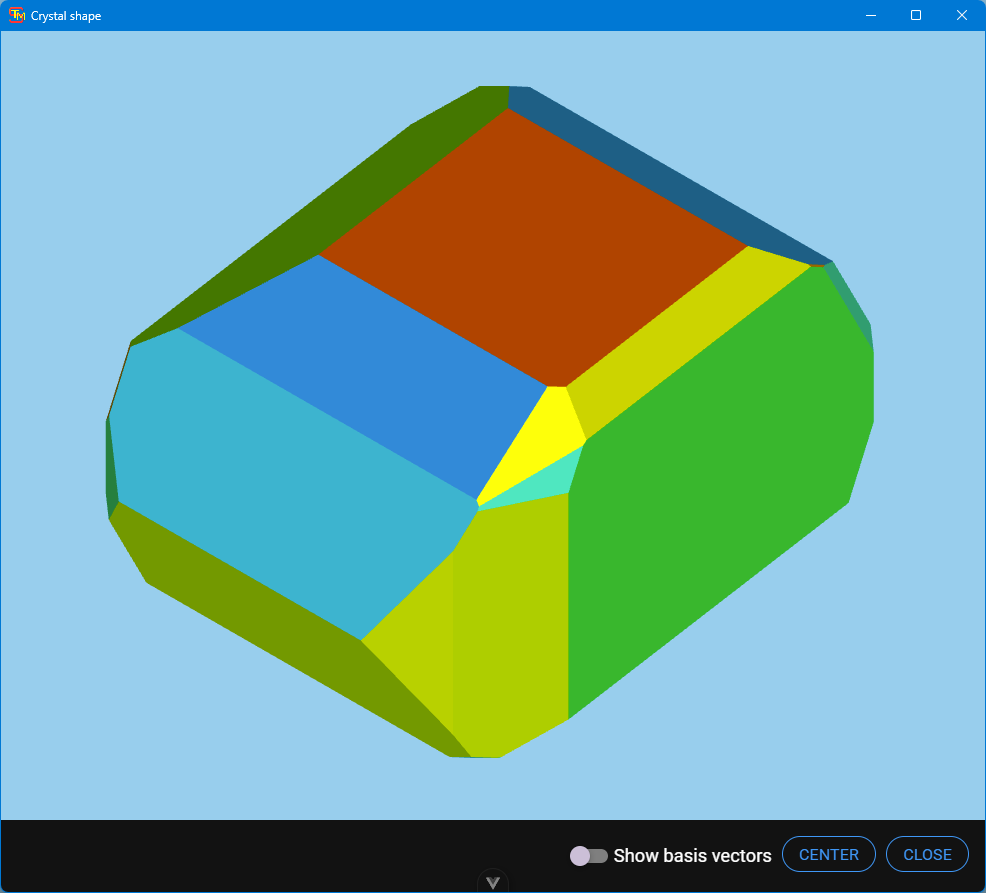
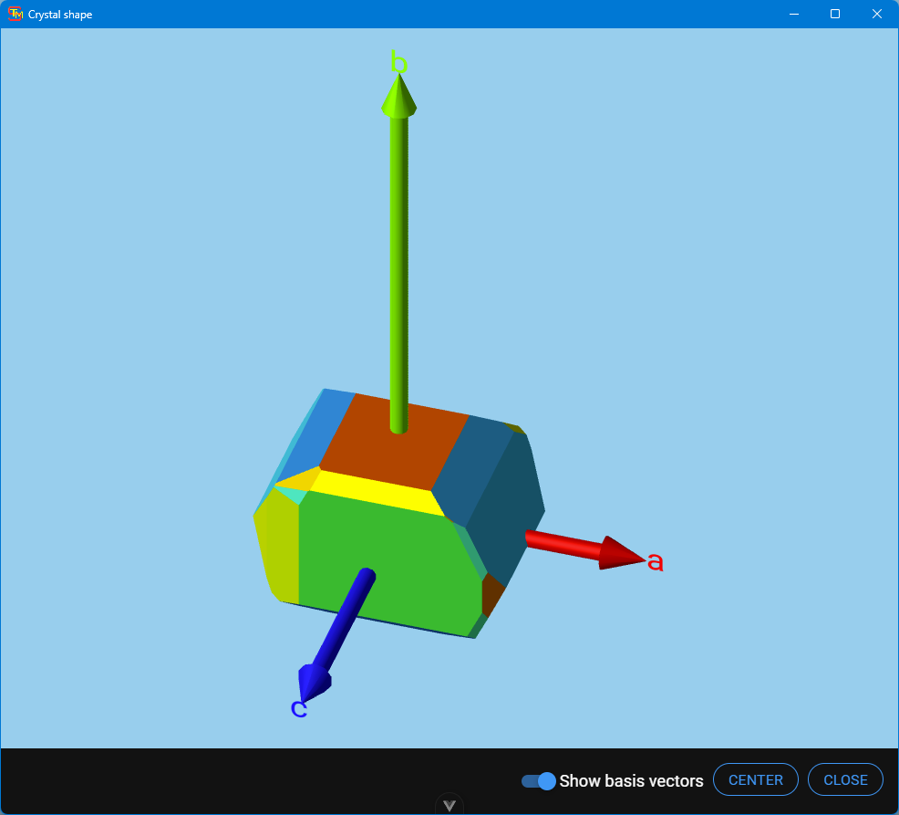

This window shows the computed crystal shape for the current structure. The controls allow the visualization of the unit cell basis vectors and the centering of the visualization.
Back to Compute crystal shape